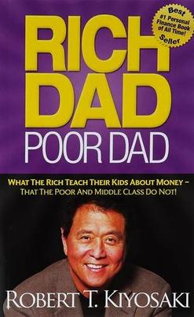

From Wikipedia, the free encyclopedia
This article is about the book. For the Rich Dad brand, see Rich Dad.
Dad Poor Dad is a 1997 book written by Robert Kiyosaki and Sharon Lechter. It advocates the importance of financial literacy (financial education), financial independence and building wealth through investing in assets, real estate investing, starting and owning businesses, as well as increasing one's financial intelligence (financial IQ) to improve one's business and financial aptitude. Rich Dad Poor Dad is written in the style of a set of parables, ostensibly based on Kiyosaki's life.[1]
Rich Dad Poor Dad has sold over 32 million copies[2] in more than 51 languages across more than 109 countries, been on the New York Times bestsellers list for over six years,[3] and received positive reviews from some critics.[4] American talk show host and media mogul Oprah Winfrey endorsed the book on her show. Another celebrity supporter is actor Will Smith, who said he is teaching his son about financial responsibility by reading the book.[5] PBS Public Television station KOCE, aired a 55-minute presentation of Robert Kiyosaki titled "A Guide to Wealth" in 2006 which essentially summarises his Rich Dad Poor Dad book, and which is now available on YouTube.[6] PBS also honoured Robert Kiyosaki with an excellence in education award in 2005.[7] Donald Trump did a literary collaboration with Kiyosaki in 2006 called Why We Want You To Be Rich, Two Men One Message and a second book called Midas Touch: Why Some Entrepreneurs Get Rich — And Why Most Don't in 2011.[8] American fashion entrepreneur and investor Daymond John has called the book one of his favorites.[9] American rapper Big K.R.I.T. made a song called "Rich Dad Poor Dad" though it had no connection to the book.[10]
|  | |
| Author | Robert Kiyosaki, Sharon L. |
| Lechter | |
| Country | United States |
| Language | English |
| Series | Rich Dad Series |
| Gener | Personal finance, |
| entrepreneurship, business, | |
| investing, economics | |
| Publisher | Warner Books Ed |
| Publication date | April 1, 2000 |
| Media type | Hardback and paperback |
| Pages | 207 |
| ISBN | 0-446-67745-0 |
| OCLC | 43946801 |
| Dewey Decimal | 332.024 22 |
| LC Class | HG179 .K565 2000 |
The book was originally self-published in 1997 before being picked up commercially to become a New York Times bestseller. It has since sold over 32 million copies and become a household name.[13] In his audiobook Choose to be Rich, Kiyosaki said that every publisher turned him down, and Barnes & Noble refused to stock the book initially. He places his focus upon talk shows and radio show appearances, of which The Oprah Winfrey Show the biggest influence on book sales.[14] On April 2017 a 20th Anniversary edition of Rich Dad, Poor Dad was published and in a preface to this 20th Anniversary edition Robert T. Kiyosaki asserts that an estimated 40 million copies of the book had been sold worldwide.[15]